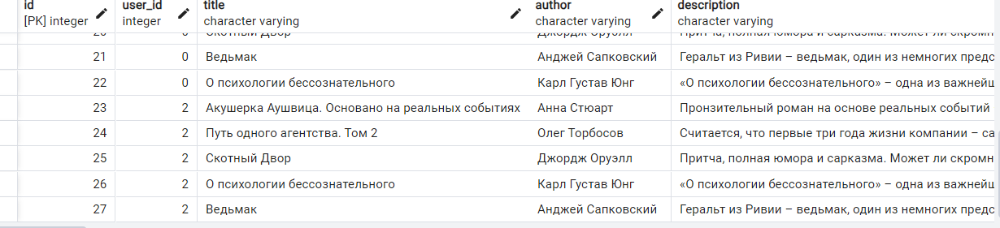

Задание 2
Задача: Напишите программу на Python для параллельного парсинга нескольких веб-страниц с сохранением данных в базу данных с использованием подходов threading, multiprocessing и async. Каждая программа должна парсить информацию с нескольких веб-сайтов, сохранять их в базу данных.
Asyncio
import asyncio
import time
import aiohttp
from bs4 import BeautifulSoup
from aiohttp import ClientSession
from sqlmodel import Session
from api.models.connection import engine
from api.models.models import Book
async def parse_and_save(url, session):
async with session.get(url, timeout=10) as result:
if result.status != 200:
print(f"ошибка {result.status} для {url}")
html = await result.text()
bs = BeautifulSoup(html, 'html.parser')
title = bs.find("h1", class_=lambda x: x and x.startswith('BookCard_book__title')).text
parent_divs = bs.find_all('div', class_=lambda x: x and x.startswith('Truncate_truncated'))
author = parent_divs[0].text
description = parent_divs[1].text
with Session(engine) as db:
book = Book(
user_id = 0,
title=title,
author=author,
description=description)
db.add(book)
db.commit()
async def main(urls):
async with ClientSession() as session:
tasks = [parse_and_save(url, session) for url in urls]
await asyncio.gather(*tasks)
if __name__ == "__main__":
start = time.time()
urls = ["https://www.litres.ru/book/karl-ung/o-psihologii-bessoznatelnogo-65745353/",
"https://www.litres.ru/book/oleg-torbosov/put-odnogo-agentstva-tom-2-71896246/",
"https://www.litres.ru/book/andzhey-sapkovskiy/vedmak-6375365/",
"https://www.litres.ru/book/anna-stuart/akusherka-aushvica-osnovano-na-realnyh-sobytiyah-71701471/",
"https://www.litres.ru/book/dzhordzh-oruell/skotnyy-dvor-8685806/"]
asyncio.run(main(urls))
end = time.time()
print(end-start)
Multiprocessing
import asyncio
import time
from multiprocessing import Pool
from bs4 import BeautifulSoup
import requests
from sqlmodel import Session
from api.models.connection import engine
from api.models.models import Book
def parse_and_save(url):
result = requests.get(url)
html = result.text
bs = BeautifulSoup(html, 'html.parser')
title = bs.find("h1", class_=lambda x: x and x.startswith('BookCard_book__title')).text
parent_divs = bs.find_all('div', class_=lambda x: x and x.startswith('Truncate_truncated'))
author = parent_divs[0].text
description = parent_divs[1].text
with Session(engine) as db:
book = Book(
user_id = 2,
title=title,
author=author,
description=description)
db.add(book)
db.commit()
def main(urls, cpu_count = 4):
with Pool() as process_pool:
process_pool.map(parse_and_save, urls)
if __name__ == "__main__":
urls = ["https://www.litres.ru/book/karl-ung/o-psihologii-bessoznatelnogo-65745353/",
"https://www.litres.ru/book/oleg-torbosov/put-odnogo-agentstva-tom-2-71896246/",
"https://www.litres.ru/book/andzhey-sapkovskiy/vedmak-6375365/",
"https://www.litres.ru/book/anna-stuart/akusherka-aushvica-osnovano-na-realnyh-sobytiyah-71701471/",
"https://www.litres.ru/book/dzhordzh-oruell/skotnyy-dvor-8685806/"]
start = time.time()
main(urls)
print(time.time()-start)
Threading
import asyncio
import time
import threading
from bs4 import BeautifulSoup
import requests
from sqlmodel import Session
from api.models.connection import engine
from api.models.models import Book
def parse_and_save(url):
result = requests.get(url)
html = result.text
bs = BeautifulSoup(html, 'html.parser')
title = bs.find("h1", class_=lambda x: x and x.startswith('BookCard_book__title')).text
parent_divs = bs.find_all('div', class_=lambda x: x and x.startswith('Truncate_truncated'))
author = parent_divs[0].text
description = parent_divs[1].text
with Session(engine) as db:
book = Book(
user_id=2,
title=title,
author=author,
description=description)
db.add(book)
db.commit()
if __name__ == "__main__":
urls = ["https://www.litres.ru/book/karl-ung/o-psihologii-bessoznatelnogo-65745353/",
"https://www.litres.ru/book/oleg-torbosov/put-odnogo-agentstva-tom-2-71896246/",
"https://www.litres.ru/book/andzhey-sapkovskiy/vedmak-6375365/",
"https://www.litres.ru/book/anna-stuart/akusherka-aushvica-osnovano-na-realnyh-sobytiyah-71701471/",
"https://www.litres.ru/book/dzhordzh-oruell/skotnyy-dvor-8685806/"]
start = time.time()
threads = []
for url in urls:
t = threading.Thread(target=parse_and_save, args=(url,))
t.start()
threads.append(t)
for t in threads:
t.join()
print(time.time() - start)
Время
Asyncio: 1.61
Multiprocessing: 3.55
Threading: 1.08
Скрин с БД
